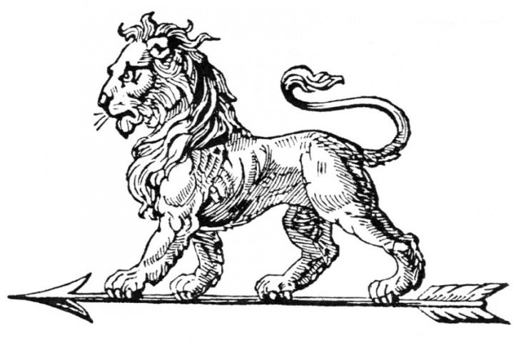
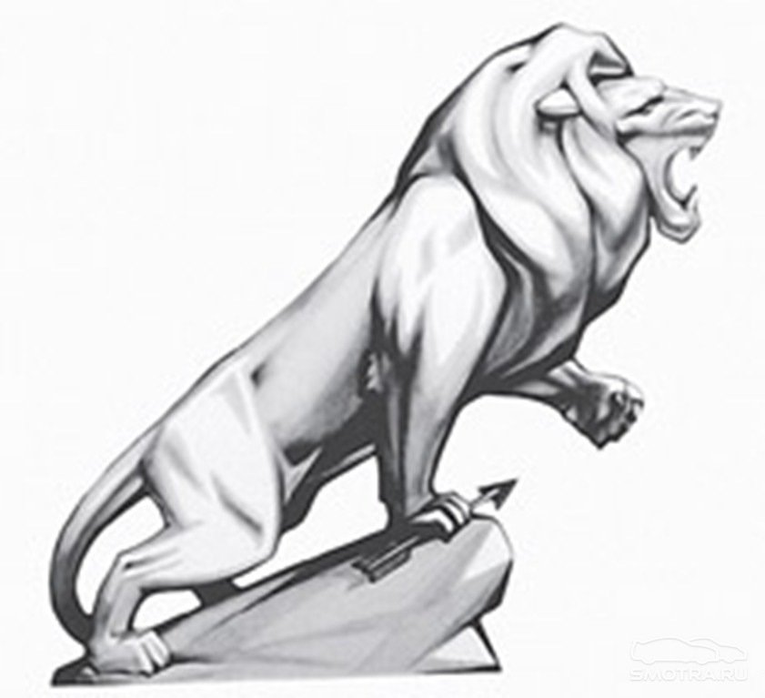

Історія логотипу Peugeot: як змінювався лев
20 листопада 1850-го Еміль Пежо запатентував емблему компанії Peugeot Freres. До цього часу бренд існував уже 45 років.
Засновники компанії запропонували зробити логотип ювеліру Жульену Белезеру. Оскільки брати Жюль та Еміль займалися виготовленням
ріжучих інструментів, то найкращим символом став лев. Властивості інструментів порівняли з міцністю левових зубів.
Гнучкість пластини - з гнучкістю спини лева. Швидкістю різання - зі швидкістю, з якою лев кидається на свою жертву. Під лапами тварини зобразили стрілу.
Протягом багатьох років зображення лева змінювалося: від образу тварини, що прогулюється стрілою, до зображення голови, оберненою в ліву сторону.
- 1881-го емблема з'явилася на кавових млинах.
- 1882-го - на велосипедах.
- 1881-1898-го на мотоциклах.
- 1881-Автомобілі отримали емблему останні - 1906-го.
Після Першої світової війни моделі бренду мали лише букви у верхній
частині решітки радіатора або під радіатором.
У 1920-х використовували 2 типи зображення левів:
- тварина готується до стрибка скульптора Бодішона
- тварина гарчить скульптора Маркса
1948-го автомобілі Peugeot прикрашала рельєфна голова лева. За 10 років вирішили створити нову емблему, оскільки попередню визнали небезпечною під час аварії.
Запуск моделі 203 ознаменував появу лева, який зійшов із герба регіону Франш-Комте і герцогства Монбельярдів.

У 1948-му автомобілі Peugeot прикрашала рельєфна голова лева.
1975-го з'явилося нове покоління логотипу - зображення лева в контурі. 1998-го створили сучасне зображення лева.
Емблему розміщували спереду і ззаду автомобілів та скутерів Peugeot.
Ряд автомобілів Peugeot
_____________________________________________________ _____________________________________________________